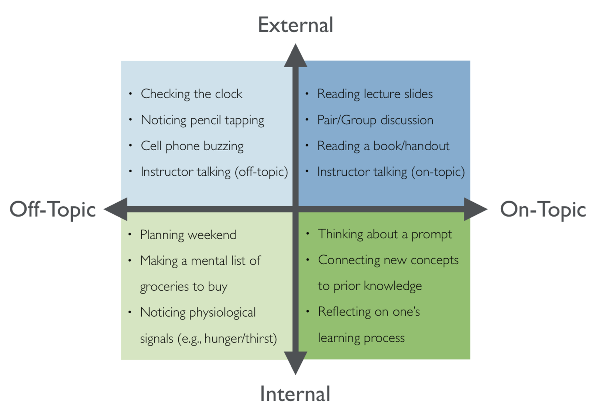

Attention Matters
Attention matters: how orchestrating attention may relate to classroom learning
Keller, A. S., Davidesco, I., & Tanner, K. D. (2020). CBE---Life Sciences Education, 19(3), fe5.
What it says
- The authors propose that a closer examination of student attention might help us to understand what makes certain teaching effective
- In this review and commentary, they discuss how student attention can be classified along two dimensions. Attention is either external, focused on people and things, or it is internal, focused on one's own thoughts. Additionally, in an educational setting, attention can be seen as generally focused on the topic being taught or else focused on various off-topic ideas or activities.

An illustration of the two dimensions of attention as well as examples for each quadrant (Figure 1 from Keller et al.)
What we might learn from it
The authors make a few suggestions for practice that follow from their review. - Instructors should take care to avoid making multiple, simultaneous demands on students' attention. For example, moving on to summarizing a group-work activity before all students have finished answering the question. - Be thoughtful about emphasizing grading or points during in-class activities as this might cause students' attention to drift into the off-topic subject of their grade. - Most important, in my opinion, is the suggestion that instructors should work to orchestrate students' transitions between external and internal attention. Reflection and consideration of new concepts is an essential part of learning, so 30 seconds or a minute of silence in class may be something more instructors should be comfortable with.